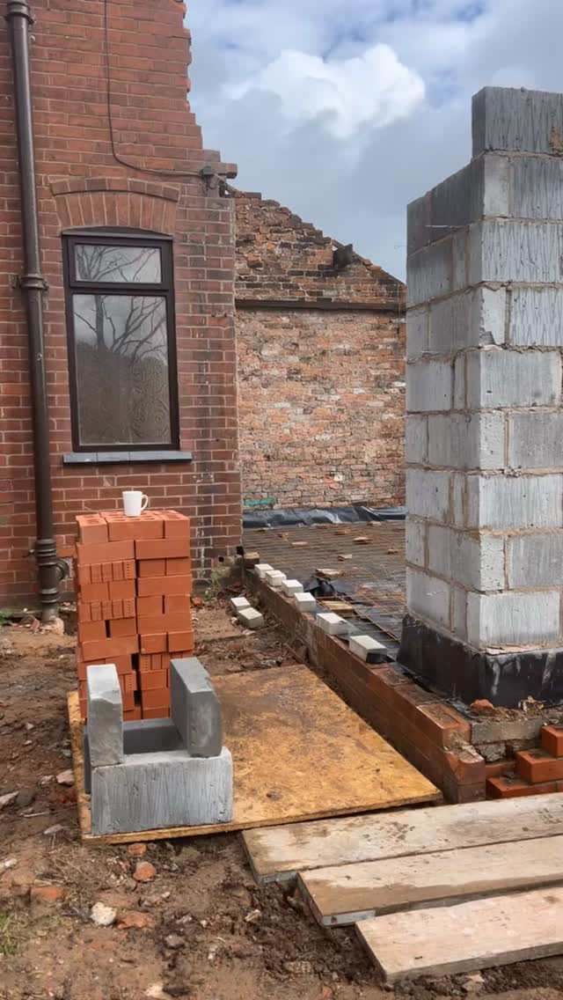

Need brickwork, landscaping or groundworks in St Helens? We are a local, Wigan-based team and St Helens is well within the 20 miles we cover from Platt Bridge, Wigan.
Whatever the job in St Helens, it is done by the same team from start to finish. As bricklayers by trade, the walls, piers and paving we build are set out properly and finished to last.
Being local to St Helens means we can call round quickly to take a look and give you a straight, no-obligation price.
Free, no-obligation quotes across Wigan and within 20 miles. Tell us about the job and we will come and take a look.